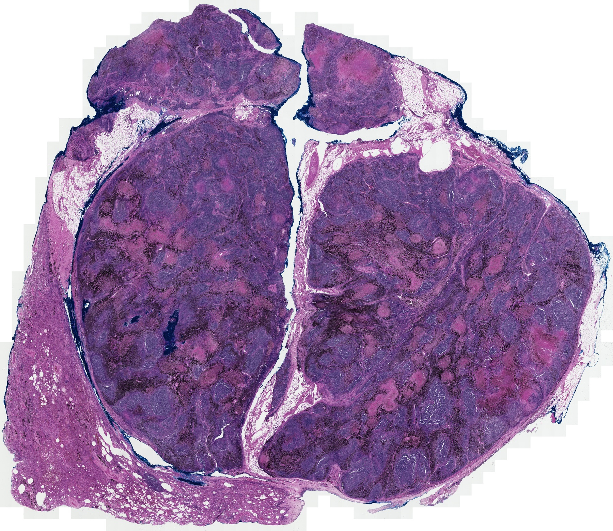
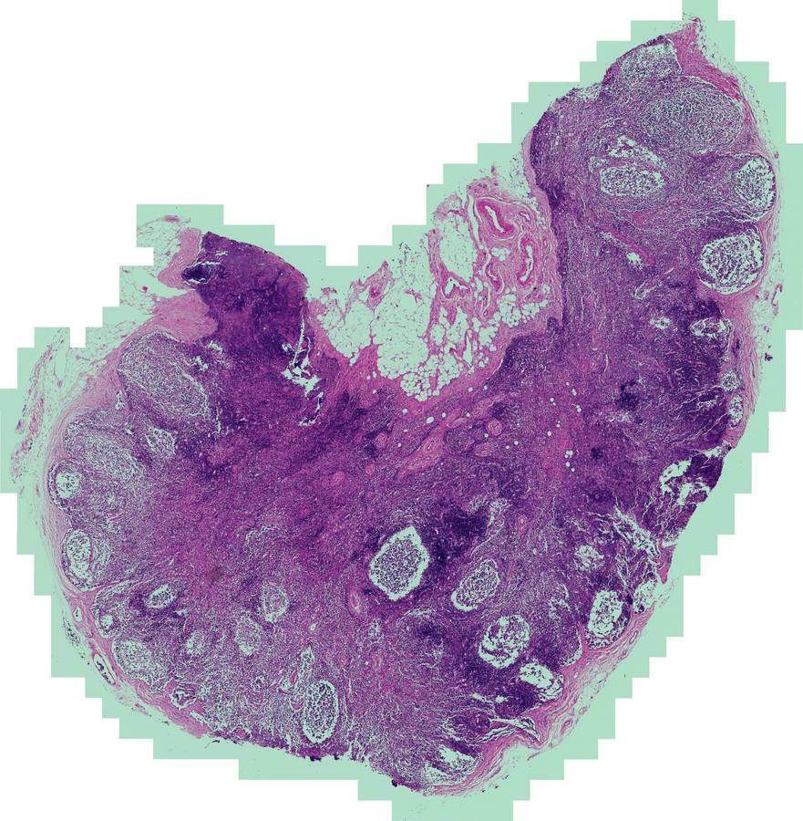
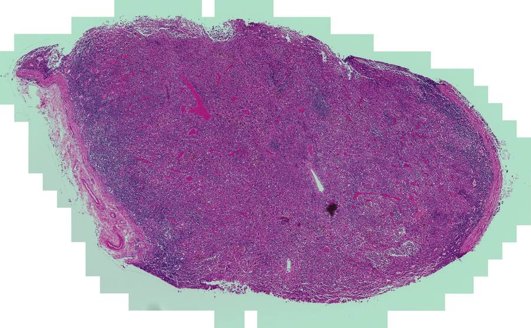
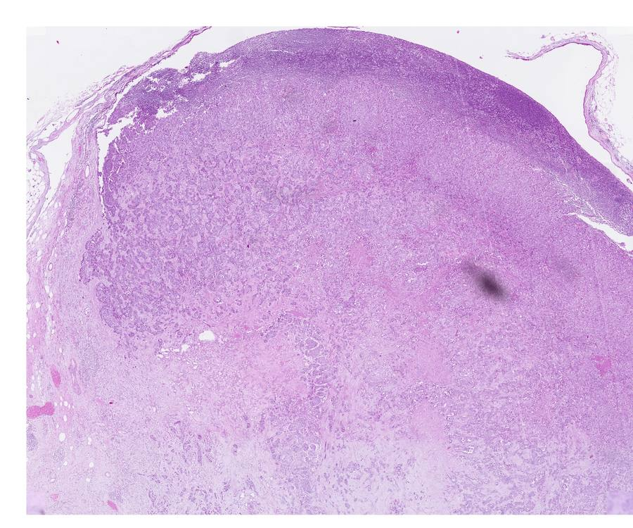
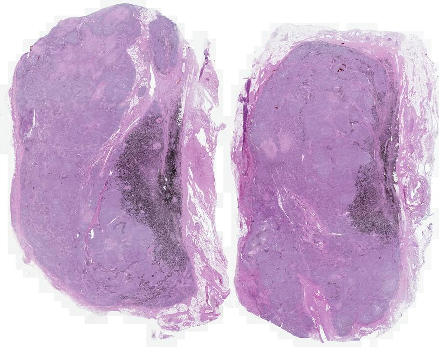
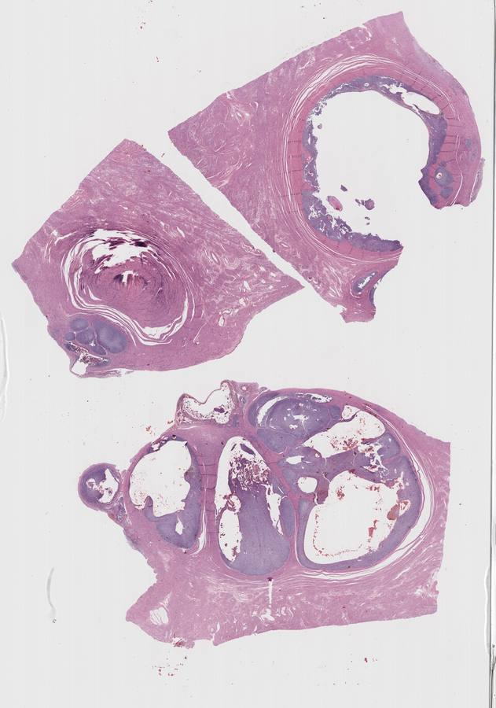

Browse results
Choose a tissue to view the complete result, inspect its GeoJSON and explore all nine zooms.







Brendon AP GY 26 01 HE B
Acquisition unconfirmed · benchmark only
Diagnostic review: bands on excluded glass; tissue-only group maps under final check.

